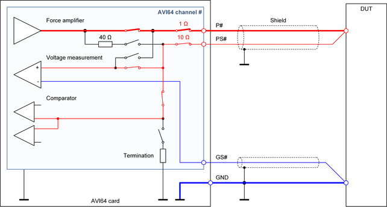

AVI64 Kelvin connection
The "Kelvin connection" is the standard scheme to use an AVI64 channel in DC, high-precision, and high-current applications.

Characteristics of the connection scheme
The Kelvin connection scheme uses the low-impedance force connection via the P# pogo pin. Voltage sensing at the DUT is performed via the PS# pogo pin. This connection scheme increases the capacitive load of the DUT but is optimized for precision DC measurements and high-current applications.
For SmarTest 7, an AVI64 channel that is configured for the DPS operating mode must be connected in the Kelvin connection scheme.
Recommended applications
- Precision DC measurements
- High-current tests
- Connection to the shared resources: Floating high-current unit, floating differential voltmeter, high-resolution voltage AWG
- High-current TMU measurements
Layout recommendations
- The pins P# and PS# must be connected together on the DUT board or directly at the DUT.
- We recommend connecting the two pins directly at the DUT so that the digital closed loop control is able to compensate the voltage drop on the P# line.
- The pin GS# and the GND plane or GND line should be connected together directly at the DUT so that the digital control loop is capable to compensate the voltage drop on the GND plane or GND line.
- The voltage drop on the lines reduces the maximum available voltage or pulse time of the high-current unit. The resistance of the related lines on the DUT board should be as low as possible to increase the voltage pulse time.
- The inductance of the loop from the P# pogo pin via the DUT and another channel or via the GND line back to the low side of the high-current unit limits the rise- and fall-time. We recommend using a low resistive and low inductive design for these connections.
- We recommend shielding the P# and PS# line pair and the GS# line with the GND line or with a GND layer.
- The Kelvin connection scheme may also be used for the "VM_HIZ" or "VM_HIZ_COH" state of SmarTest 7 or for the highImpedance connection mode of SmarTest 8 but the P# pogo pin will add more input leakage current and input capacitance to the DUT pin. We recommend therefore inserting a relay for separating the DUT pin from the trace to the P# pogo pin. The relay should be placed close to the DUT socket. For more information, refer to Combination of the Sense only connection and the Kelvin connection in AVI64 Sense only connection.
Functional changes
- Introduced in SmarTest 7.4.0 / 8.1.0